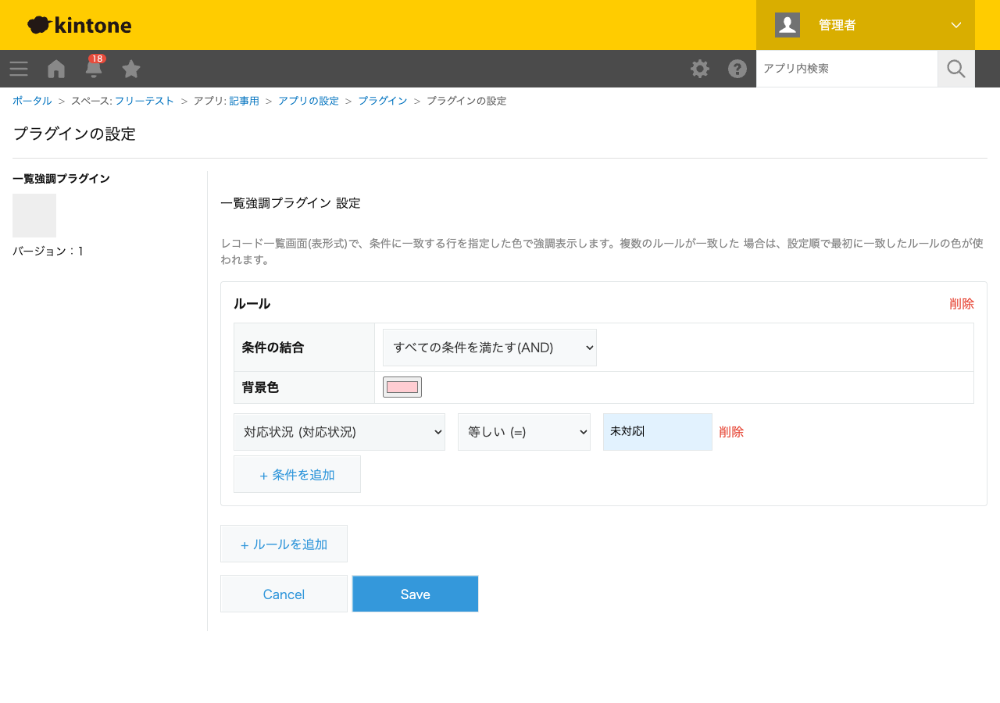
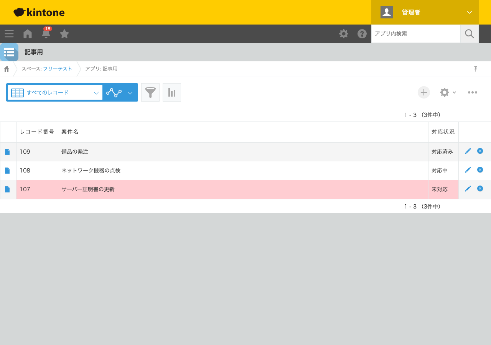

GovAppsプラグイン 安全性を確認できる無料kintoneプラグイン集
案件管理アプリの一覧を眺めていても、「未対応」の案件がどれかを列の文字だけで探すのは 手間がかかります。この記事では、無料プラグインで条件に一致する行の背景色を自動的に変えて、 対応が必要な案件を一目で見つけられるようにする方法を、実際の設定画面と強調表示結果つきで 解説します。
kintoneの標準機能には、一覧の行を条件によって色分けする機能はありません。絞り込み条件で
「未対応」だけを表示することはできますが、他のステータスと同時に見比べながら未対応だけを
目立たせる、という使い方はできません。JavaScriptカスタマイズを自作すれば
kintone.app.setRecordListStyle()で行の色を変えられますが、複数条件のAND/OR判定・
複数ルールの優先順位づけまで実装するのは簡単な作業ではありません。
「一覧の行を条件によって色分けする」機能を用意する方法は、大きく4つあります。それぞれの 向き不向きをまとめました。
| 方法 | 向いている場合 | 注意点 |
|---|---|---|
| kintone標準の絞り込みのみ | 色分けせず絞り込みの切り替えだけで十分な場合 | 複数条件を同時に見比べながら色で目立たせることはできない |
| JavaScriptを自作する | 社内に開発者がいて、独自の条件判定ロジックが必要な場合 | AND/OR判定・複数ルールの優先順位づけの実装・保守が必要 |
| 有料の他社プラグイン | 予算があり、手厚いサポートを求める場合 | 月額課金が発生する。ソースコードが非公開で、外部通信の有無を利用者側で確認しにくいことが多い |
| GovAppsプラグイン(このプラグイン) | 無料で試したい、社内・庁内でセキュリティを確認してから導入したい場合 | 対応列は表形式の一覧のみ(カレンダー・カスタマイズビューは対象外) |
GovAppsのプラグインはすべて無料・広告なしで、追加課金なしで使い続けられます。 ソースコードはGitHubで全公開しているオープンソースなので、 「本当に外部と通信していないか」を自治体・企業のセキュリティ担当者自身の目で確認できます (このプラグインも個別ページにセキュリティレビュー結果を掲載しています)。
一覧強調プラグインは、条件と背景色を設定するだけです。 今回は「案件名」「対応状況」(ドロップダウン: 未対応/対応中/対応済み)を持つアプリで設定しました。

アプリを更新してレコード一覧画面を開くと、対応状況が「未対応」の行だけがピンク色で 強調表示されます。「対応中」「対応済み」の行は通常どおりの表示のままです。

ルールは複数追加でき、1行が複数のルールに一致する場合は設定した順番で最初に一致したルールの 色が採用されます。担当者ごと・期限超過ごとなど、複数の観点で色分けルールを使い分けられます。